18. Differential gene expression analysis#
Key takeaways
In scRNA-seq, there are two main approaches to identify differentially expressed genes: the sample-level view and the cell-level view. The sample-level approach has been shown to outperform the cell-level approach for scRNA-seq data.
In the sample-level view, a pseudobulk sample is created for each patient and cell type by aggregating counts (e.g., summing across cells). These pseudobulk profiles can then be analyzed using tools such as edgeR or DESeq2, which were originally developed for bulk RNA-seq data.
Explore your data before modeling. Performing PCA on pseudobulk samples can reveal major sources of variation that should be accounted for in your design matrix.
Remove lowly expressed genes separately for each cell type, as different cell populations express distinct gene sets.
If your dataset contains different subgroups, construct a design matrix that includes all relevant covariates. You can then define contrasts to test the specific comparisons of interest.
Environment setup
Install conda:
Before creating the environment, ensure that conda is installed on your system.
Save the yml content:
Copy the content from the yml tab into a file named
environment.yml.
Create the environment:
Open a terminal or command prompt.
Run the following command:
conda env create -f environment.yml
Activate the environment:
After the environment is created, activate it using:
conda activate <environment_name>
Replace
<environment_name>with the name specified in theenvironment.ymlfile. In the yml file it will look like this:name: <environment_name>
Verify the installation:
Check that the environment was created successfully by running:
conda env list
name: differential-gene-expression
channels:
- conda-forge
- bioconda
dependencies:
- conda-forge::decoupler-py=2.1.6
- conda-forge::pertpy=1.0.6
- bioconda::pydeseq2=0.5.4
- conda-forge::python=3.13.13
- conda-forge::scanpy=1.12.1
Get data and notebooks
This book uses lamindb to store, share, and load datasets and notebooks using the theislab/sc-best-practices instance. We acknowledge free hosting from Lamin Labs.
Install lamindb
Install the lamindb Python package:
pip install lamindb
Optionally create a lamin account
Sign up and log in following the instructions
Verify your setup
Run the
lamin connectcommand:
import lamindb as ln ln.Artifact.connect("theislab/sc-best-practices").df()
You should now see up to 100 of the stored datasets.
Accessing datasets (Artifacts)
Search for the datasets on the Artifacts page
Load an Artifact and the corresponding object:
import lamindb as ln af = ln.Artifact.connect("theislab/sc-best-practices").get(key="key_of_dataset", is_latest=True) obj = af.load()
The object is now accessible in memory and is ready for analysis. Adapt the
lamindb.Artifact.connect("theislab/sc-best-practices").get("SOMEIDXXXX")suffix to get respective versions.Accessing notebooks (Transforms)
Search for the notebook on the Transforms page
Load the notebook:
lamin load <notebook url>
which will download the notebook to the current working directory. Analogously to
Artifacts, you can adapt the suffix ID to get older versions.
18.1. Motivation#
This chapter is a more detailed continuation of the annotation subchapter which already introduced differential gene expression (DGE) as a tool to annotate clusters with cell types. Here, we focus on more advanced use-cases of differential gene expression testing in complex experimental designs, which involve one or more conditions such as diseases, genetic knockouts or drugs. In such cases we are commonly interested in the magnitude and significance of differences in gene expression patterns between the condition of interest and a reference. This reference can be everything but is commonly a healthy sample. This statistical test can be applied to arbitrary groups, but in the case of single-cell RNA-Seq is commonly applied on the cell type level.
{kind=link}
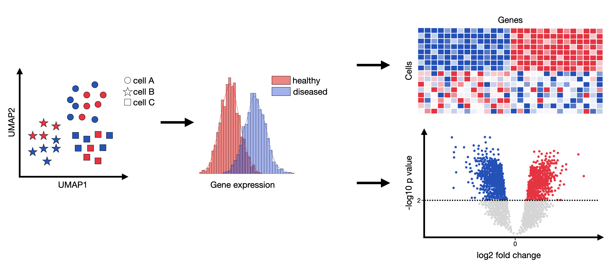
Fig. 18.1 DGE analysis attempts to infer genes that are statistically significantly over- or underexpressed between any compared groups (commonly between healthy and condition per cell type).#
The outcome of such an analysis could be genesets which effect and potentially explain any observed phenotypes. These genesets can then be examined more closely with respect to, for example, affected pathways or induced cell-cell communication changes.
A differential gene expression test usually returns the log2 fold-change and the adjusted p-value per compared genes per compared conditions. This list can then be sorted by p-value and investigated in more detail.
The popular student’s t-test is one way of conducting such a test. However, it fails to take several single-cell RNA-seq peculiarities into account such as the excess number of zeros originating from dropouts or the need for complex experimental designs. More specifically, very rarely does one have sufficient sample numbers to accurately estimate the variance without pooling information across genes. Moreover, raw counts are never an absolute measurement of expression for a specific gene within a given sample. The actual read number per gene depends on the efficiency of the library preparation, the amount of contamination from non-coding transcripts and the sequencing depth. It does therefore lack in both, sensitivity and specificity for single-cell RNA-seq, let alone experimental design flexibility.
As a result, DGE testing is a classic bioinformatics problem which has been tackled by many tools already. Generally, the problem is currently being approached from two views, the sample-level view where expression is aggregated to create “pseudobulks” and then analysed with methods originally designed for bulk expression samples such as edgeR [Robinson et al., 2010] or DEseq2 [Love et al., 2014] and the cell-level view where cells are modeled individually using generalized mixed effect models such as MAST [Finak et al., 2015] or glmmTMB [Brooks et al., 2017]. The consensus and robustness across datasets for DGE tools is low [Das et al., 2021, Wang et al., 2019]. As previously described, although single-cell data contains technical noise artifacts such as dropout, zero-inflation and high cell-to-cell variability [Hicks et al., 2017, Luecken and Theis, 2019, Vallejos et al., 2017], methods designed for bulk RNA-seq data performed favorably compared to methods explicitly designed for scRNA-seq data [Das et al., 2021, Jaakkola et al., 2016, Soneson and Robinson, 2018, Squair et al., 2021]. Single-cell specific methods were found to be especially prone to wrongly labeling highly expressed genes as differentially expressed.
A recent study highlighted the issue of pseudoreplication where inferential statistics is applied to biological replicates which are not statistically independent. Failing to account for the inherent correlation of replicates (cells from the same individual) inflates the false discovery rate (FDR) [Junttila et al., 2022, Squair et al., 2021, Zimmerman et al., 2021]. Therefore, batch effect correction or the aggregation of cell-type-specific expression values within an individual through either a sum, mean or random effect per individual, that is pseudobulk generation, should be applied prior to DGE analysis to account for within-sample correlations [Zimmerman et al., 2021]. Generally, both, pseudobulk methods with sum aggregation such as edgeR, DESeq2, or Limma [Ritchie et al., 2015] and mixed models such as MAST with random effect setting were found to be superior compared to naive methods, such as the popular Wilcoxon rank-sum test or Seurat’s [Hao et al., 2021] latent models, which do not account for them [Junttila et al., 2022].
In matters arising from the Zimmerman paper, Murphy et al. critically examined the Zimmerman benchmarking strategy and improved it [Murphy and Skene, 2022]. They came to the conclusion that pseudobulk methods perform best but whether sum or mean aggregation works better requires further investigation.
Hence, in this notebook, we demonstrate how to perform DGE analysis using the pseudobulk approach. We choose DESeq2 due to its Python implementation, PyDESeq2. However, the code can be easily adapted for use with edgeR by following the pertpy tutorial on differential gene expression. For this chapter, we combined parts of the tutorials from decoupler and pertpy. Please refer to their documentation for more details.
18.2. Environment setup#
import decoupler as dc
import lamindb as ln
import numpy as np
import pandas as pd
import pertpy as pt
import scanpy as sc
ln.track()
18.3. Preparing the dataset#
We will use the Kang dataset, which is a 10x droplet-based scRNA-seq peripheral blood mononuclear cell (PBMC) data from 8 Lupus patients before and after 6h-treatment with INF-β (16 samples in total) [Kang et al., 2018]. Interferon beta is used in the form of natural fibroblast or recombinant preparations (interferon beta-1a and interferon beta-1b) and exerts antiviral and antiproliferative properties similar to those of interferon alpha. Interferon beta has been approved for the treatment of relapsing–remitting multiple sclerosis and secondary progressive multiple sclerosis.
First, we load the full dataset.
adata = ln.Artifact.get(
key="conditions/differential_gene_expression.h5ad",
).load()
adata
AnnData object with n_obs × n_vars = 24673 × 15706
obs: 'nCount_RNA', 'nFeature_RNA', 'tsne1', 'tsne2', 'label', 'cluster', 'cell_type', 'replicate', 'nCount_SCT', 'nFeature_SCT', 'integrated_snn_res.0.4', 'seurat_clusters'
var: 'name'
obsm: 'X_pca', 'X_umap'
We will need label (which contains the condition label), replicate (patient id) and cell_type columns of the .obs.
adata.obs[:5]
| nCount_RNA | nFeature_RNA | tsne1 | tsne2 | label | cluster | cell_type | replicate | nCount_SCT | nFeature_SCT | integrated_snn_res.0.4 | seurat_clusters | |
|---|---|---|---|---|---|---|---|---|---|---|---|---|
| index | ||||||||||||
| AAACATACATTTCC-1 | 3017.0 | 877 | -27.640373 | 14.966629 | ctrl | 9 | CD14+ Monocytes | patient_1016 | 1704.0 | 711 | 1 | 1 |
| AAACATACCAGAAA-1 | 2481.0 | 713 | -27.493646 | 28.924885 | ctrl | 9 | CD14+ Monocytes | patient_1256 | 1614.0 | 662 | 1 | 1 |
| AAACATACCATGCA-1 | 703.0 | 337 | -10.468194 | -5.984389 | ctrl | 3 | CD4 T cells | patient_1488 | 908.0 | 337 | 6 | 6 |
| AAACATACCTCGCT-1 | 3420.0 | 850 | -24.367997 | 20.429285 | ctrl | 9 | CD14+ Monocytes | patient_1256 | 1738.0 | 653 | 1 | 1 |
| AAACATACCTGGTA-1 | 3158.0 | 1111 | 27.952170 | 24.159738 | ctrl | 4 | Dendritic cells | patient_1039 | 1857.0 | 928 | 12 | 12 |
We will need to work with raw counts so we check that .X indeed contains raw counts and put them into the counts layer of our AnnData object.
X = adata.X.data
np.array_equal(X, np.round(X))
True
adata.layers["counts"] = adata.X.copy()
We have 8 control and 8 disease patients.
print(len(adata[adata.obs["label"] == "ctrl"].obs["replicate"].cat.categories))
print(len(adata[adata.obs["label"] == "stim"].obs["replicate"].cat.categories))
8
8
We filter cells which have less than 200 genes and genes which were found in less than 3 cells for a rudimentary quality control.
sc.pp.filter_cells(adata, min_genes=200)
sc.pp.filter_genes(adata, min_cells=3)
adata.shape
(24562, 15701)
18.4. Pseudobulking#
Since PyDESeq2 was introduced as a method for DGE analysis for bulk data, we first need to create pseudobulk samples from our single-cell dataset. For each patient we create one pseudobulk sample per cell type by aggregating the cells from each subpopulation and taking the sum of gene expression counts. Regardless of whether we want to run the analysis only on a few cell subpopulations and fit a model for each one of them separately or fit one model for all of them, we first need to prepare the data.
Since we need to create pseudobulks for each patient-condition combination, we first need to create such a column by concatenating replicate and label.
adata.obs["sample"] = pd.Categorical(
f"{rep}_{l}" for rep, l in zip(
adata.obs["replicate"],
adata.obs["label"],
strict=False
)
)
Next, we generate pseudobulk samples using decoupler. With 8 patients, 8 cell types, and 2 conditions (ctrl and stim), this yields a total of 128 pseudobulks (8 x 8 x 2).
adata_pb = dc.pp.pseudobulk(
adata, sample_col="sample",
groups_col="cell_type",
layer="counts",
mode="sum"
)
adata_pb
AnnData object with n_obs × n_vars = 128 × 15701
obs: 'sample', 'cell_type', 'label', 'replicate', 'psbulk_cells', 'psbulk_counts'
var: 'name', 'n_cells'
layers: 'psbulk_props'
Low-quality samples can be filtered using two criteria: the number of cells (psbulk_cells) and the total count sum (psbulk_counts).
These metrics can be visualized in the following plot to guide filtering decisions.
dc.pl.filter_samples(
adata=adata_pb,
groupby=["label", "cell_type", "replicate"],
min_cells=10,
min_counts=1000,
figsize=(5, 8),
)
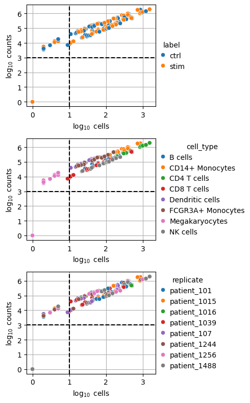
While thresholds are dataset-specific and arbitrary, a commonly used guideline is to retain samples with a minimum of 10 cells and 1,000 total counts.
Applying these thresholds (indicated by dashed lines) restricts the dataset to pseudobulks in the upper-right quadrant.
The filtering step can be carried out with decoupler.pp.filter_samples().
dc.pp.filter_samples(adata_pb, min_cells=10,min_counts=1000)
After filtering out low-quality samples, we can visualize the remaining profiles. All megakaryocyte pseudobulk samples failed quality control, and two CD8 T cell samples were removed.
dc.pl.obsbar(adata=adata_pb, y="cell_type", hue="label", figsize=(6, 3))
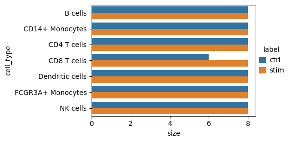
18.5. Variability Exploration#
The validity of DGE results highly depends on the capture of the major axis of variations in the statistical model. Intermediate data exploration steps such as principal component analysis (PCA) or multidimensional scaling (MDS) on pseudobulk samples allow for the identification of the sources of variation and thus can guide the construction of corresponding design and contrast matrices that model the data [Law et al., 2020].
Failing to account for multiple sources of biological variability for experiments which include biological replicates will inflate the FDR [Lähnemann et al., 2020, Thurman et al., 2021]. While increasing the number of cells per individual increases the precision, it has a limited effect on the power for the detection of differences across individuals. Therefore, the best way to increase statistical power is to increase the number of independent experimental samples [Zimmerman et al., 2021].
Since our data has already been generated, we cannot further increase the number of independent experimental samples. Nevertheless, we will now explore our data to determine the major axes of variation to properly generate our design matrices.
We perform very basic exploratory data analysis on the generated pseudo-replicates to identify potential outliers among patients or pseudobulks.
These outliers can then be excluded to avoid biasing the differential expression results.
We store the raw counts in the 'counts' layer, then normalize and scale them before computing PCA.
Afterwards, we revert to the raw counts for downstream analysis.
adata_pb.layers['counts'] = adata_pb.X.copy()
sc.pp.normalize_total(adata_pb, target_sum=1e6)
sc.pp.log1p(adata_pb)
sc.pp.scale(adata_pb, max_value=10)
sc.tl.pca(adata_pb)
dc.pp.swap_layer(adata=adata_pb, key="counts", inplace=True)
We also include psbulk_counts_log and psbulk_cells_log because taking the log makes library sizes (psbulk_counts and psbulk_cells) less skewed and allows more reliable detection of correlations with principal components.
adata_pb.obs["psbulk_counts_log"] = np.log(adata_pb.obs["psbulk_counts"])
adata_pb.obs["psbulk_cells_log"] = np.log(adata_pb.obs["psbulk_cells"])
dc.tl.rankby_obsm(adata_pb, key="X_pca")
sc.pl.pca_variance_ratio(adata_pb)
dc.pl.obsm(
adata=adata_pb,
return_fig=True,
nvar=5,
titles=["PC scores", "Adjusted p-values"],
figsize=(10, 5)
)
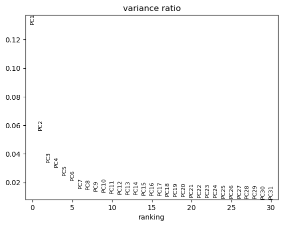
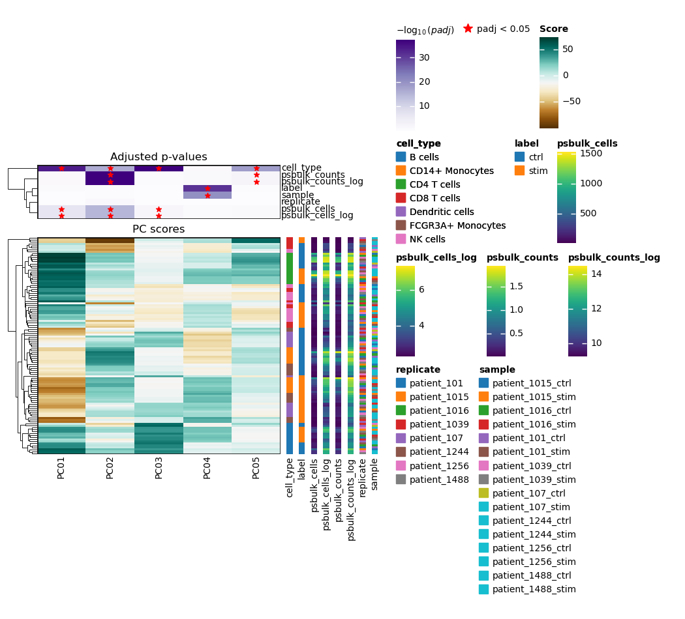
In this dataset, PC1 appears to explain the largest proportion of variance because it shows the highest variance ratio of around 0.13. It is associated with the metadata variables cell type and pseudobulk cells. Metadata variables associated with PCs that capture a substantial amount of variance are important and should be accounted for as relevant covariates (e.g., include in the design matrix) in downstream differential expression analysis when possible. The principal components can also be directly visualized, colored by these metadata variables.
adata_pb.obs = adata_pb.obs.sort_index(axis=1)
sc.pl.pca(adata_pb, color=adata_pb.obs, ncols=2, size=300)
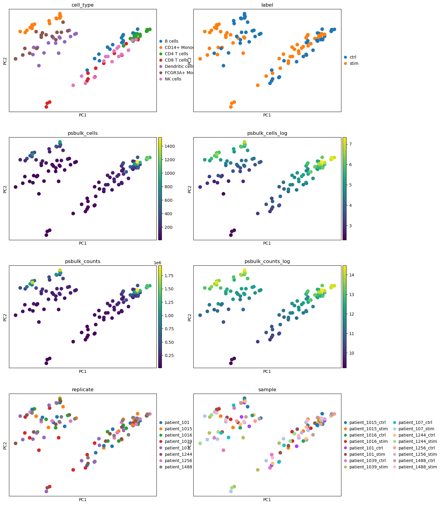
We observe separation of cell types on the PCA plots as well as the separation into stimulated and unstimulated cells. For pseudobulk cells and counts, we can also observe some clustering, with high values appearing in the top left and top right regions. Looking more closely, we see that these clusters of high values partially overlap with specific cell type clusters: the top right cluster overlaps with CD4 T cells, while the top left cluster overlaps with CD14+ monocytes. This suggests that the number of cells and counts assigned to a pseudospot may depend on the pseudospot’s cell type. The covariates replicate and sample do not seem to be clearly correlated with the PCA components so we do not include any of them in our design matrix.
18.6. One cell type or group#
If you already know which cell types to focus on, subset them at this step to reduce confounding factors. Otherwise, you can first analyze the full dataset to identify the most affected cell types, then return to this step.
If variability exploration showed that cell types are associated with PCs, it may help to rerun it on your cell type subsets to see if covariate effects disappear. In our case, the association with pseudobulk cells disappears in CD14+ monocytes. That’s why we won’t include it into our first design matrix.
18.6.1. Feature selection#
In addition to filtering low-quality samples, lowly or noisily expressed genes can also be filtered prior to DGE analysis. This step should be performed at the cell type level, as different cell types may express distinct sets of genes. We run the pipeline on CD14+ monocytes subset of the data, as it was shown in the paper that the highest number of differentially expressed genes was identified in this subpopulation.
adata_mono = adata_pb[adata_pb.obs["cell_type"] == "CD14+ Monocytes"].copy()
adata_mono.shape
(16, 15701)
Two strategies are used to filter genes:
decoupler.pp.filter_by_expr(): Retains genes with a minimum total number of reads across all samples (min_total_count) and a minimum number of counts in a given number of samples (min_count). This approach was introduced in edgeR [Robinson et al., 2010].decoupler.pp.filter_by_prop(): Retains genes that are expressed in at least a specified proportion of cells (min_prop) across a minimum number of samples (min_smpls). The number of retained genes can be visualized, and the filtering parameters can be adjusted interactively.
dc.pl.filter_by_expr(
adata=adata_mono,
group="label",
min_count=10,
min_total_count=15,
large_n=10,
min_prop=0.7,
)
dc.pl.filter_by_prop(
adata=adata_mono,
min_prop=0.1,
min_smpls=2,
)
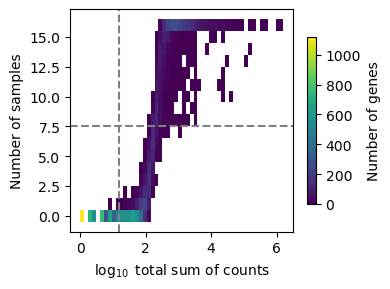
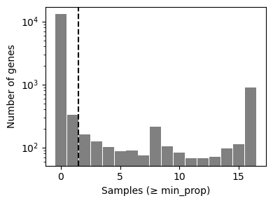
The top plot displays gene frequencies based on the filter_by_expr metrics, while the bottom plot corresponds to filter_by_prop.
Dashed lines indicate the current threshold values.
In the top plot, only genes in the upper-right quadrant are retained, in the bottom plot, only those to the right of the vertical line are kept.
Although filtering thresholds are arbitrary, a common heuristic is to look for bimodal distributions and set thresholds that separate low-quality genes from the rest. In this example, the default parameters retain a substantial number of genes while removing potentially noisy ones.
Once the threshold parameters are set, the actual gene filtering can be performed by simply changing pl to pp.
dc.pp.filter_by_expr(
adata=adata_mono,
group="label",
min_count=10,
min_total_count=15,
large_n=10,
min_prop=0.7,
)
dc.pp.filter_by_prop(
adata=adata_mono,
min_prop=0.1,
min_smpls=2,
)
adata_mono.shape
(16, 2345)
18.6.2. Differential expression testing with PyDESeq2#
We now switch to the pertpy package, as it makes it easier to use its built-in plotting functions. However, DGE analysis can also be performed manually using PyDESeq2. The interface of PyDESeq2 in pertpy is very similar.
At the next step, it is important to define an appropriate design matrix for the model. For this purpose, we strongly recommend reading this guide, which provides a helpful introduction to design matrices.
Understand the design syntax
We combine all the variables we would like to include in our model with a +.
The variable names correspond to the column names ins .obs.
Interactions between variables can be added to the model with :.
For example, the model y ~ a + b + a:b includes the effect of a and b on y as well as how the effect of a on y changes depending on b and vice versa.
In our context, y is the observed gene expression and a and b could be label and cell_type.
Now it also becomes clear where the ~ comes from: It separates the two sides of a formula.
So just add ~ at the beginning of your design.
Besides that, it might be useful to know that a * b is shorthand for a + b + a:b.
In most cases, this is all you need.
For a deeper dive, we recommend reading the formulaic and patsy documentation.
pds2 = pt.tl.PyDESeq2(adata=adata_mono,design='~ label')
pds2.fit()
res_df = pds2.test_contrasts(pds2.contrast(
column="label",
baseline="ctrl",
group_to_compare="stim")
)
res_df.head(10)
| variable | baseMean | log_fc | lfcSE | stat | p_value | adj_p_value | contrast | |
|---|---|---|---|---|---|---|---|---|
| 0 | IFITM2 | 491.867844 | 4.670296 | 0.151406 | 30.846095 | 6.319564e-209 | 1.481938e-205 | None |
| 1 | IL1RN | 900.090770 | 6.466407 | 0.223553 | 28.925558 | 5.697320e-184 | 6.680107e-181 | None |
| 2 | NT5C3A | 221.226625 | 5.583271 | 0.193526 | 28.850299 | 5.023241e-183 | 3.926500e-180 | None |
| 3 | SSB | 365.880933 | 3.336528 | 0.116120 | 28.733517 | 1.455497e-181 | 8.532854e-179 | None |
| 4 | RABGAP1L | 211.055152 | 5.994200 | 0.230397 | 26.016826 | 3.194924e-149 | 1.498419e-146 | None |
| 5 | RTCB | 152.556535 | 3.431247 | 0.134175 | 25.572931 | 3.052671e-144 | 1.193086e-141 | None |
| 6 | DYNLT1 | 948.183449 | 2.609925 | 0.102510 | 25.460223 | 5.439750e-143 | 1.822316e-140 | None |
| 7 | CCL8 | 7259.221485 | 9.389468 | 0.369940 | 25.381043 | 4.083958e-142 | 1.197110e-139 | None |
| 8 | CXCL11 | 1433.690007 | 9.021039 | 0.357845 | 25.209353 | 3.163259e-140 | 8.242047e-138 | None |
| 9 | DDX58 | 201.134679 | 4.946996 | 0.200043 | 24.729696 | 5.127619e-135 | 1.202427e-132 | None |
Let’s take a look at the columns in the results table:
variable. gene namebaseMean: mean of normalized counts for all sampleslog_fc: log2 fold changelfcSE: standard errorstat: Wald statisticp_value: Wald test p-valueadj_p_value: Benjamini-Hochberg adjusted p-values
The rows are sorted by adj_p_value.
The log_fc always depends on the defined baseline. A positive log_fc means gene expression is higher in the group of interest compared to the baseline group, while negative values indicate lower expression.
In this case, IFITM2 increased by around 4.7 in stimulated compared to control CD14+ monocytes.
In contrast, VCAN decreased by around 4.4 (see the plot below).
Next, we visualize the results.
pds2.plot_volcano(res_df, log2fc_thresh=0)
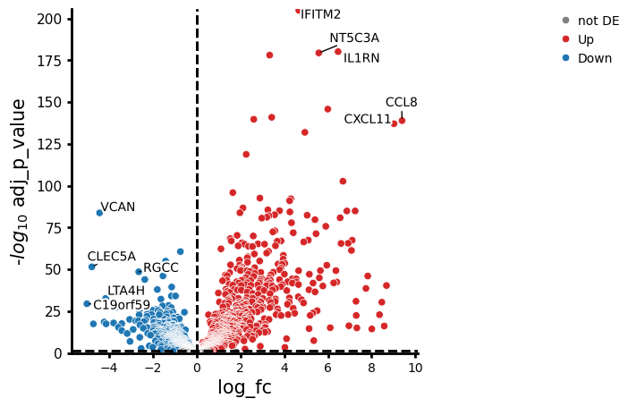
The higher a point is on the y-axis, the smaller the adj_p_value.
The further a point is from 0 on the x-axis, the larger the change in expression.
Overall, this means that genes in the upper left and upper right regions of the plot show the strongest changes in gene expression and, at the same time, are also the least likely to have changes that occurred by chance.
We can also visualize our results for different subgroups. In this case, we plot the results for individual patients.
pds2.plot_paired(
adata_mono,
results_df=res_df,
n_top_vars=4,
groupby="label",
pairedby="replicate"
)
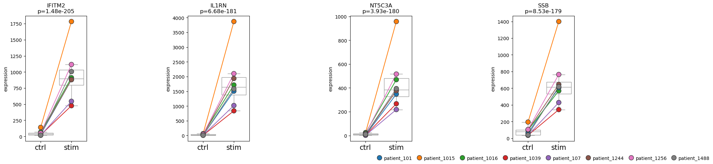
We can see that the CD14+ monocytes from patient 1015 appear to be highly responsive to the treatment.
18.7. Multiple cell types or groups#
If you’re unsure which cell type will be most affected by a treatment, a good starting point is to fit a model to the entire dataset. Afterwards, you can return to the analysis steps from the first part of this chapter and focus on the cell type of interest.
In addition, the following steps demonstrate how to handle analyses involving multiple groups within the data. You may already know which cell type you want to examine more closely, but your dataset might include multiple groups (e.g., sex, responder vs. non-responder status or age groups). Then, this section provides an initial glimpse of the types of questions you can explore for a single cell type across multiple groups.
Since we do not have particularly interesting subgroups within our CD14+ monocyte subset (adata_mono), we will instead analyze multiple cell types together.
Because this analysis includes several cell types simultaneously, we will skip the feature selection step at this stage.
Feature selection is better performed at the level of individual cell types, as different cell types can express distinct gene sets.
We will begin by constructing a simple design matrix.
pds2 = pt.tl.PyDESeq2(adata=adata_pb, design="~ label")
pds2.fit()
res_df = pds2.compare_groups(
adata_pb,
column="label",
baseline="ctrl",
groups_to_compare=["stim"]
)
pds2.plot_paired(
adata_pb,
results_df=res_df,
n_top_vars=4,
groupby="label",
pairedby="cell_type"
)
• Performing pseudobulk for paired samples
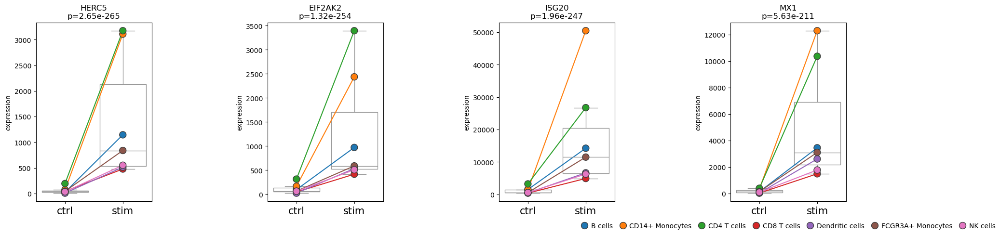
We can see that the top four differentially expressed genes show their strongest expression changes not only in CD14+ monocytes but also in CD4 T cells.
Now we could ask: Is the gene expression difference between ctrl and stim different between CD14+ Monocytes and CD4 T cells?
In other words, could the gene expression changes depend on the cell type?
To do so, we create a more complex desgin matrix and then use contrasts to specify the conditions of interest.
pds2 = pt.tl.PyDESeq2(adata=adata_pb, design="~ cell_type * label")
pds2.fit()
interaction_contrast = (
pds2.cond(cell_type="CD14+ Monocytes", label="stim") -
pds2.cond(cell_type="CD14+ Monocytes", label="ctrl")
) - (
pds2.cond(cell_type="CD4 T cells", label="stim") -
pds2.cond(cell_type="CD4 T cells", label="ctrl")
)
res_df = pds2.test_contrasts(interaction_contrast)
pds2.plot_volcano(res_df, log2fc_thresh=0)
NaNs encountered, dropping rows with NaNs
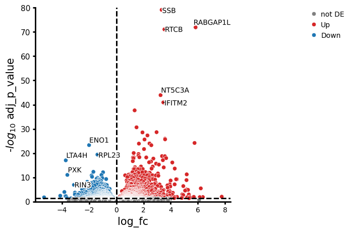
As we can see, there are some genes that stand out in their differences in gene expression changes. For example, the change in expression of RABGAP1L is higher in CD14+ monocytes compared to CD4 T cells, while ENO1 shows a lower change.
We can also plot the fold changes of the top differentially expressed genes. However, we only include results that pass a certain alpha threshold, for example 0.01.
pds2.plot_fold_change(res_df[res_df["adj_p_value"] < 0.01].copy(), n_top_vars=15)
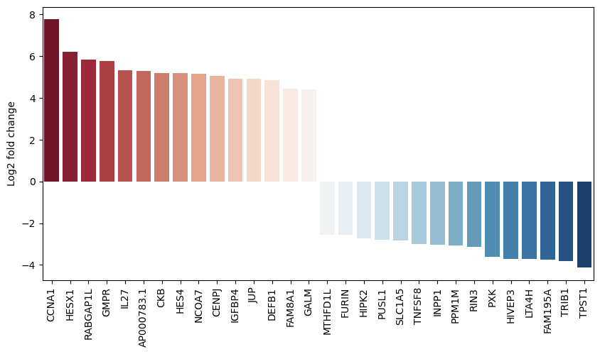
Finally, we can also plot multiple comparisons. In this case, we are comparing the gene expression of CD14+ monocytes to all other cell types. Comparing cell types with each other should roughly reflect the marker genes used during annotation. This therefore mainly shows what is possible and should ideally be replaced by your groups of interest (e.g., sex, responder vs. non-responder status or age groups).
res_df = pds2.compare_groups(adata_pb,
column="cell_type",
baseline="CD14+ Monocytes",
groups_to_compare=list(set(adata_pb.obs["cell_type"].unique()) - {"CD14+ Monocytes"})
)
pds2.plot_multicomparison_fc(res_df, n_top_vars=5, figsize=(12, 1.5))
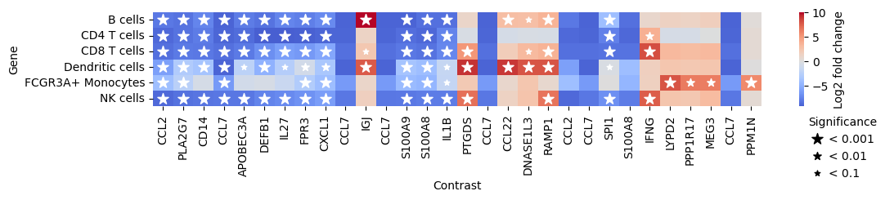
The plot shows genes that are differentially expressed in all other cell types compared to CD14+ monocytes. For example, CLL2 and CCL7 are significantly less expressed in all other cell types compared to CD14+ monocytes.
18.8. Questions#
18.8.1. Flipcards#
18.8.2. Multiple choice questions#
What does a positive log2 fold change indicate in DESeq2 results?
What is the purpose of PCA on pseudobulk samples before DGE testing?
What does an interaction term like `cell_type:label` in a design matrix allow you to test?
18.9. References#
Mollie E. Brooks, Kasper Kristensen, Koen J. van Benthem, Arni Magnusson, Casper W. Berg, Anders Nielsen, Hans J. Skaug, Martin Mächler, and Benjamin M. Bolker. glmmTMB Balances Speed and Flexibility Among Packages for Zero-inflated Generalized Linear Mixed Modeling. The R Journal, 9(2):378–400, 2017. URL: https://doi.org/10.32614/RJ-2017-066, doi:10.32614/RJ-2017-066.
Samarendra Das, Anil Rai, Michael L Merchant, Matthew C Cave, and Shesh N Rai. A comprehensive survey of statistical approaches for differential expression analysis in single-cell term`RNA` sequencing studies. Genes (Basel), 12(12):1947, December 2021.
Greg Finak, Andrew McDavid, Masanao Yajima, Jingyuan Deng, Vivian Gersuk, Alex K. Shalek, Chloe K. Slichter, Hannah W. Miller, M. Juliana McElrath, Martin Prlic, Peter S. Linsley, and Raphael Gottardo. Mast: a flexible statistical framework for assessing transcriptional changes and characterizing heterogeneity in single-cell term`rna` sequencing data. Genome Biology, 16(1):278, Dec 2015. URL: https://doi.org/10.1186/s13059-015-0844-5, doi:10.1186/s13059-015-0844-5.
Yuhan Hao, Stephanie Hao, Erica Andersen-Nissen, William M. Mauck III, Shiwei Zheng, Andrew Butler, Maddie J. Lee, Aaron J. Wilk, Charlotte Darby, Michael Zagar, Paul Hoffman, Marlon Stoeckius, Efthymia Papalexi, Eleni P. Mimitou, Jaison Jain, Avi Srivastava, Tim Stuart, Lamar B. Fleming, Bertrand Yeung, Angela J. Rogers, Juliana M. McElrath, Catherine A. Blish, Raphael Gottardo, Peter Smibert, and Rahul Satija. Integrated analysis of multimodal single-cell data. Cell, 2021. URL: https://doi.org/10.1016/j.cell.2021.04.048, doi:10.1016/j.cell.2021.04.048.
Stephanie C Hicks, F William Townes, Mingxiang Teng, and Rafael A Irizarry. Missing data and technical variability in single-cell term`RNA`-sequencing experiments. Biostatistics, 19(4):562–578, 11 2017. URL: https://doi.org/10.1093/biostatistics/kxx053, arXiv:https://academic.oup.com/biostatistics/article-pdf/19/4/562/26346801/kxx053.pdf, doi:10.1093/biostatistics/kxx053.
Maria K Jaakkola, Fatemeh Seyeterm`DNA`srollah, Arfa Mehmood, and Laura L Elo. Comparison of methods to detect differentially expressed genes between single-cell populations. Briefings in Bioinformatics, 18(5):735–743, 07 2016. URL: https://doi.org/10.1093/bib/bbw057, arXiv:https://academic.oup.com/bib/article-pdf/18/5/735/25581122/bbw057.pdf, doi:10.1093/bib/bbw057.
Sini Junttila, Johannes Smolander, and Laura L Elo. Benchmarking methods for detecting differential states between conditions from multi-subject single-cell term`rna`-seq data. bioRxiv, 2022. URL: https://www.biorxiv.org/content/early/2022/02/19/2022.02.16.480662, arXiv:https://www.biorxiv.org/content/early/2022/02/19/2022.02.16.480662.full.pdf, doi:10.1101/2022.02.16.480662.
Hyun Min Kang, Meena Subramaniam, Sasha Targ, Michelle Nguyen, Lenka Maliskova, Elizabeth McCarthy, Eunice Wan, Simon Wong, Lauren Byrnes, Cristina M Lanata, and others. Multiplexed droplet single-cell term`rna`-sequencing using natural genetic variation. Nature biotechnology, 36(1):89–94, 2018.
Charity W. Law, Kathleen Zeglinski, Xueyi Dong, Monther Alhamdoosh, Gordon K. Smyth, and Matthew E. Ritchie. A guide to creating design matrices for gene expression experiments. F1000Research, 9:1444–1444, Dec 2020. 33604029[pmid]. URL: https://pubmed.ncbi.nlm.nih.gov/33604029.
Michael I. Love, Wolfgang Huber, and Simon Anders. Moderated estimation of fold change and dispersion for term`rna`-seq data with deseq2. Genome Biology, 15(12):550, Dec 2014. URL: https://doi.org/10.1186/s13059-014-0550-8, doi:10.1186/s13059-014-0550-8.
Malte D Luecken and Fabian J Theis. Current best practices in single-cell term`rna`-seq analysis: a tutorial. Molecular Systems Biology, 15(6):e8746, 2019. URL: https://www.embopress.org/doi/abs/10.15252/msb.20188746, arXiv:https://www.embopress.org/doi/pdf/10.15252/msb.20188746, doi:https://doi.org/10.15252/msb.20188746.
David Lähnemann, Johannes Köster, Ewa Szczurek, Davis J. McCarthy, Stephanie C. Hicks, Mark D. Robinson, Catalina A. Vallejos, Kieran R. Campbell, Niko Beerenwinkel, Ahmed Mahfouz, Luca Pinello, Pavel Skums, Alexandros Stamatakis, Camille Stephan-Otto Attolini, Samuel Aparicio, Jasmijn Baaijens, Marleen Balvert, Buys de Barbanson, Antonio Cappuccio, Giacomo Corleone, Bas E. Dutilh, Maria Florescu, Victor Guryev, Rens Holmer, Katharina Jahn, Thamar Jessurun Lobo, Emma M. Keizer, Indu Khatri, Szymon M. Kielbasa, Jan O. Korbel, Alexey M. Kozlov, Tzu-Hao Kuo, Boudewijn P.F. Lelieveldt, Ion I. Mandoiu, John C. Marioni, Tobias Marschall, Felix Mölder, Amir Niknejad, Lukasz Raczkowski, Marcel Reinders, Jeroen de Ridder, Antoine-Emmanuel Saliba, Antonios Somarakis, Oliver Stegle, Fabian J. Theis, Huan Yang, Alex Zelikovsky, Alice C. McHardy, Benjamin J. Raphael, Sohrab P. Shah, and Alexander Schönhuth. Eleven grand challenges in single-cell data science. Genome Biology, 21(1):31, Feb 2020. URL: https://doi.org/10.1186/s13059-020-1926-6, doi:10.1186/s13059-020-1926-6.
Alan E. Murphy and Nathan G. Skene. A balanced measure shows superior performance of pseudobulk methods in single-cell RNA-sequencing analysis. Nat Commun, dec 2022. URL: https://doi.org/10.1038%2Fs41467-022-35519-4, doi:10.1038/s41467-022-35519-4.
Matthew E. Ritchie, Belinda Phipson, Di Wu, Yifang Hu, Charity W. Law, Wei Shi, and Gordon K. Smyth. Limma powers differential expression analyses for term`rna`-sequencing and microarray studies. Nucleic acids research, 43(7):e47–e47, Apr 2015. gkv007[PII]. URL: https://doi.org/10.1093/nar/gkv007, doi:10.1093/nar/gkv007.
Mark D. Robinson, Davis J. McCarthy, and Gordon K. Smyth. Edger: a bioconductor package for differential expression analysis of digital gene expression data. Bioinformatics (Oxford, England), 26(1):139–140, Jan 2010. btp616[PII]. URL: https://doi.org/10.1093/bioinformatics/btp616, doi:10.1093/bioinformatics/btp616.
Charlotte Soneson and Mark D. Robinson. Bias, robustness and scalability in single-cell differential expression analysis. Nature Methods, 15(4):255–261, Apr 2018. URL: https://doi.org/10.1038/nmeth.4612, doi:10.1038/nmeth.4612.
Jordan W. Squair, Matthieu Gautier, Claudia Kathe, Mark A. Anderson, Nicholas D. James, Thomas H. Hutson, Rémi Hudelle, Taha Qaiser, Kaya J. E. Matson, Quentin Barraud, Ariel J. Levine, Gioele La Manno, Michael A. Skinnider, and Grégoire Courtine. Confronting false discoveries in single-cell differential expression. Nature Communications, 12(1):5692, Sep 2021. URL: https://doi.org/10.1038/s41467-021-25960-2, doi:10.1038/s41467-021-25960-2.
Andrew L Thurman, Jason A Ratcliff, Michael S Chimenti, and Alejandro A Pezzulo. Differential gene expression analysis for multi-subject single cell term`RNA` sequencing studies with aggregateBioVar. Bioinformatics, 37(19):3243–3251, May 2021.
Catalina A. Vallejos, Davide Risso, Antonio Scialdone, Sandrine Dudoit, and John C. Marioni. Normalizing single-cell term`rna` sequencing data: challenges and opportunities. Nature Methods, 14(6):565–571, Jun 2017. URL: https://doi.org/10.1038/nmeth.4292, doi:10.1038/nmeth.4292.
Tianyu Wang, Boyang Li, Craig E. Nelson, and Sheida Nabavi. Comparative analysis of differential gene expression analysis tools for single-cell term`rna` sequencing data. BMC Bioinformatics, 20(1):40, Jan 2019. URL: https://doi.org/10.1186/s12859-019-2599-6, doi:10.1186/s12859-019-2599-6.
Kip D. Zimmerman, Mark A. Espeland, and Carl D. Langefeld. A practical solution to pseudoreplication bias in single-cell studies. Nature Communications, 12(1):738, Feb 2021. URL: https://doi.org/10.1038/s41467-021-21038-1, doi:10.1038/s41467-021-21038-1.
18.10. Contributors#
We gratefully acknowledge the contributions of: